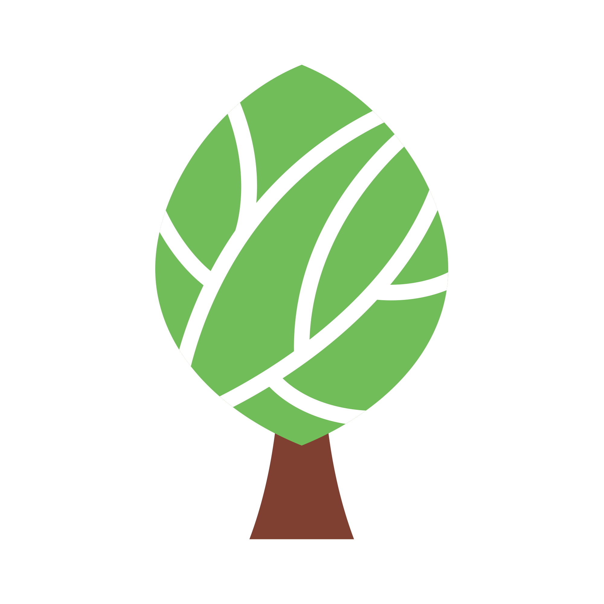

| Parc Național / Rezervație | Traseu | Marcaj |
|---|---|---|
| Retezat | Ohaba de sub Piatra - Cârnic - Cabana Pietrele - Lacul Bucura | Bandă albastră / Triunghi albastru |
| Pui - Hobița - Creasta Șerelului - Vf. Peleaga | Bandă roșie | |
| Câmpușel - Cheile Scorotei - Stâna Scorota | Punct galben | |
| Câmpușel - Piatra Iorgovanului | Triunghi galben | |
| Câmpul lui Neag - Cheile Buții - Cabana Buta | Cruce roșie | |
| Buila-Vânturarița | Schitul Pahomie → Curmătura Oale | Punct galben |
| Curmătura Oale → Vioreanu | Bandă roșie | |
| Refugiu Poiana Piscul cu Brazi | Cruce albastră | |
| Poiana Piscul cu Brazi → Vârful Vânturarița | Bandă roșie | |
| Călimani | Sat Neagra Șarului - Vf. 12 Apostoli - Poiana Izvoarele | Punct roșu |
| Gura Hăitii - Pietrele Roșii - Dornișoara | Cruce albastră | |
| Poiana Izvoarelor - Vf. Pietrosu Călimani - Vf. Rețitiș | Cruce roșie | |
| Sat Dornișoara - Izvoarele Dornei | Punct galben | |
| Vatra Dornei - Poiana Spânzului - Poiana Snopului | Triunghi albastru | |
| Cheile Bicazului‑Hășmaș | Valea Bicăjelului - Piatra Cherecului | Punct roșu |
| Cheile Bicazului ↔ Șaua Țifra ↔ Șaua Piatra Roșie | Triunghi galben | |
| Podul Suspendat - Turnul Negru - Poiana Țifrea | Bandă galbenă / Cruce galbenă | |
| Lacul Roșu - Traseu de vizitare | Bandă albastră | |
| Circuit Clăbucet - Piatra Altarului | Cruce roșie | |
| Nera-Beușnița | Ochiul Beiului - Cascada Beușnița | Bandă galbenă |
| Cheile Nerei - Traseu panoramă | Punct albastru | |
| Valea Beușnița - Văile superioare | Triunghi roșu | |
| Valea Nerei - Circuit pădure | Cruce albastră | |
| Cheile inferioare - Conector | Bandă roșie | |
| Cozia | Creasta Folea - Vf. Păpușa | Bandă roșie |
| Ciucevele Sud | Triunghi galben | |
| Valea Latoriței - Turnul lui Poli | Cruce albastră | |
| Creasta Cozia - Circuit | Punct roșu | |
| Pădurea Cozia - Traseu | Bandă albastră | |
| Defileul Jiului | Gura Apei - Muntele Lui Roman | Bandă roșie |
| Bretea Mânăstire - Stejaru | Triunghi galben | |
| Valea Jiului - Creastă | Bandă albastră | |
| Scărișoara - Subcetate | Cruce roșie | |
| Domogled-Valea Cernei | Lacul Prisaca - Șaua Vânturarița | Bandă galbenă |
| Valea Cernei - Creasta Carașului | Triunghi roșu | |
| Creasta Comarnic | Cruce albastră | |
| Băile Herculane - Cioaca Mare | Bandă roșie | |
| Letea | Dunele Letea - Circuit | Bandă galbenă |
| Gârla Veche - Traseu | Punct albastru | |
| Pădurea veche - Traseu | Triunghi verde | |
| Malul Dunării - Traseu | Cruce roșie | |
| Piatra Craiului | Cabana Plaiul Foii - Refugiul Șpirlea - Umerii Pietrei Craiului - Vf. Tămașul Mare | Bandă roșie |
| Padina Hotarului - Vf. Turnu | Cruce albastră | |
| Padina Șindrilăriei - Refugiul Diana - Vf. Turnu | Cruce roșie | |
| Padina Popii - Vf. Padina Popii | Triunghi albastru | |
| Rodna | Pasul Bârgău - Vf. Pietrosul Rodnei | Bandă roșie |
| Tăul Zânelor - Circuit | Punct roșu | |
| Suhard - Creasta Glăjărie | Triunghi galben | |
| Lala Mare - Vf. Ineu | Cruce albastră | |
| Semenic-Caraș | Creasta Oslea - Traseu | Bandă roșie |
| Cheile Carașului - Traseu panoramă | Triunghi albastru | |
| Piatra Goznei - Pietrele Albe | Punct galben | |
| Valea Lucina - Valea Rea | Cruce roșie |